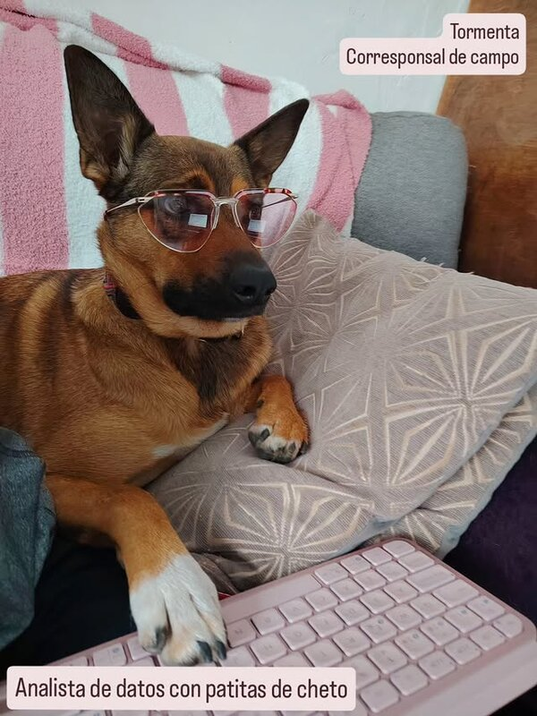
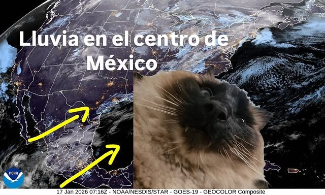
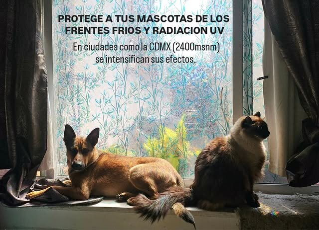
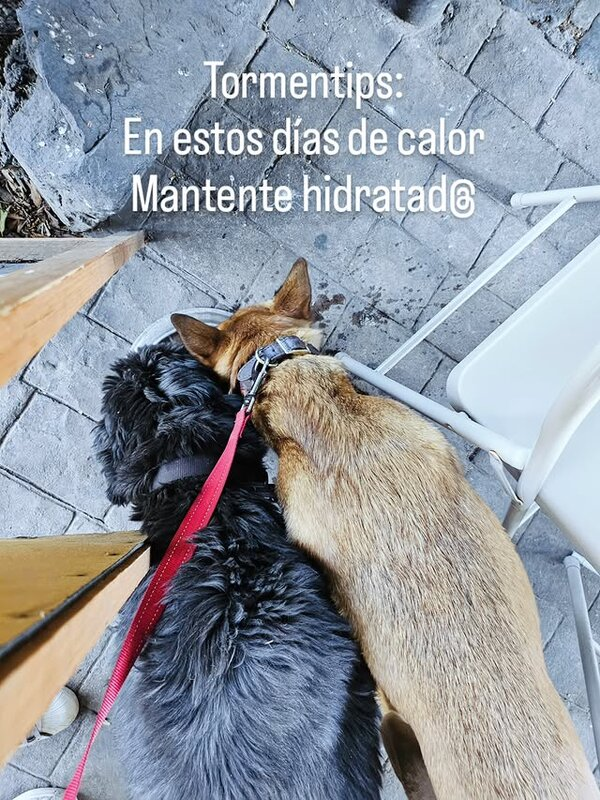
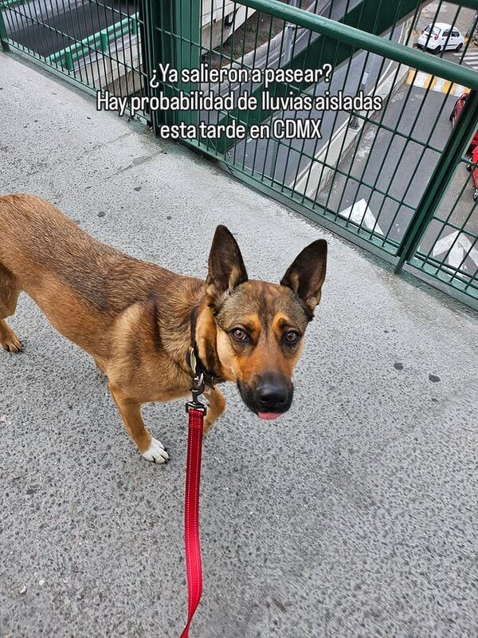
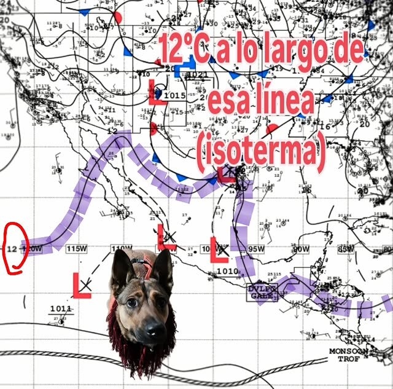
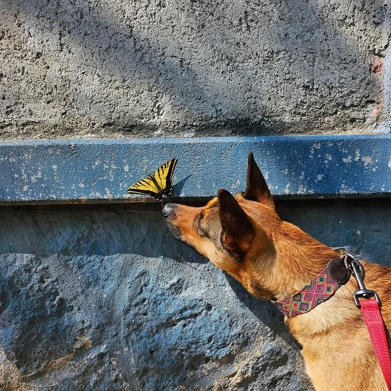

Corresponsales meteorológicos con patitas

Corresponsal de Campo
Analista de datos con patitas de cheto. Reportera de campo para el Servicio Michiorológico Nacional. Especialista en frentes fríos, lluvias aisladas y contingencias ambientales en la CDMX.

Analista Satelital
Experto en imágenes GOES-19 y mapas sinópticos de la NOAA. Desde su puesto de observación en la ventana, monitorea sistemas de lluvia, isotermas y frentes fríos sobre el centro de México.
Consejos meteorológicos para ti y tus mascotas





Reportes en video desde el campo